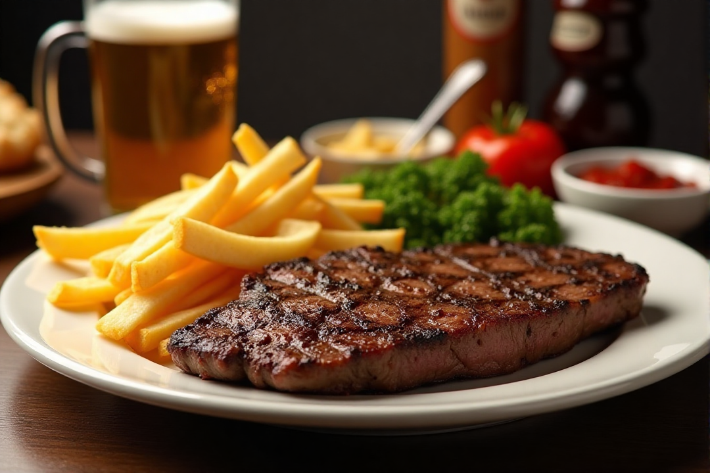

A NEW STANDARD IN BISTRO DINING
Enter Bistro, the best place to eat in Gainesville, where exceptional cuisine and a memorable experience collide. We are committed to reinventing cuisine by providing a carefully planned menu, exceptional service, and an atmosphere that makes you want to savour every second. For those who value the art of fine dining, Bistro is the ideal location. Enter a world of vivid flavours, friendly service, and flawless attention to detail.
